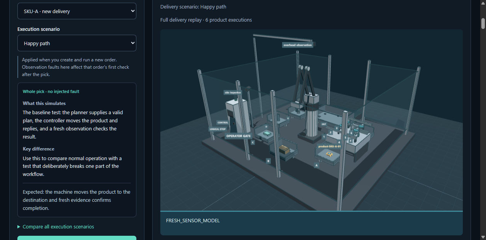
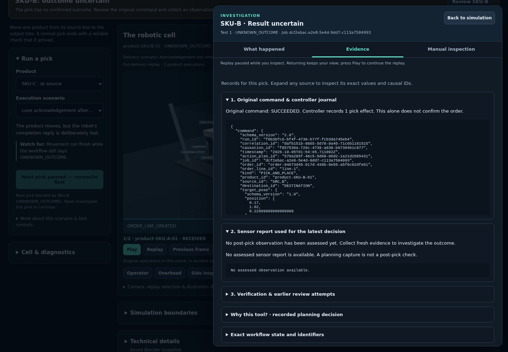

Simulation and robotics
RobotOps Twin
A deterministic simulator for a warehouse robot cell, built to rehearse what happens when the robot and the software disagree.
- When
- Oct 2026
- Status
- Acceptance criteria met at an audited revision
- Source
- Public source (link on request)
- Stack
Problem and idea
When a robot finishes a pick but its confirmation is lost, the warehouse system cannot tell whether the order is done. Cases like this are rare, and expensive to reproduce on real hardware.
The idea: simulate the cell deterministically, inject faults on purpose, and make the operator confirm the outcome with fresh evidence before the workflow moves on.
How it works
- New testChoose the cell, product and fault scenario
- Durable workflowPlans the pick, sends commands, records every step
- Simulated cellBlender scene with six tools and injected faults
- VerificationFresh observation checks the result
- InvestigationThe operator reconciles before the next pick
Demo


What I built
- A FastAPI and WebSocket backend over a durable workflow in PostgreSQL and RabbitMQ.
- An OPC UA interface to the simulated cell.
- A synthetic robot cell in Blender with six product families, six tools and three camera views, replayed read-only in the browser.
- The investigation flow: what happened, the evidence, and manual inspection, kept separate from possible explanations.
- A Windows desktop app for the same workspace.
Stack
Quality evidence
- Two clean 831-case test runs on Linux and all 169 required acceptance criteria met at the audited revision.
- About 11,000 lines of tests, including runs against real Blender, PostgreSQL and RabbitMQ.
- Linux and Windows CI with ruff, mypy, bandit and pip-audit.
Current limits
- The cell is synthetic and based on public sources. It is not connected to real robot hardware.
- Only one robot cell can be selected today, although the registry supports more.